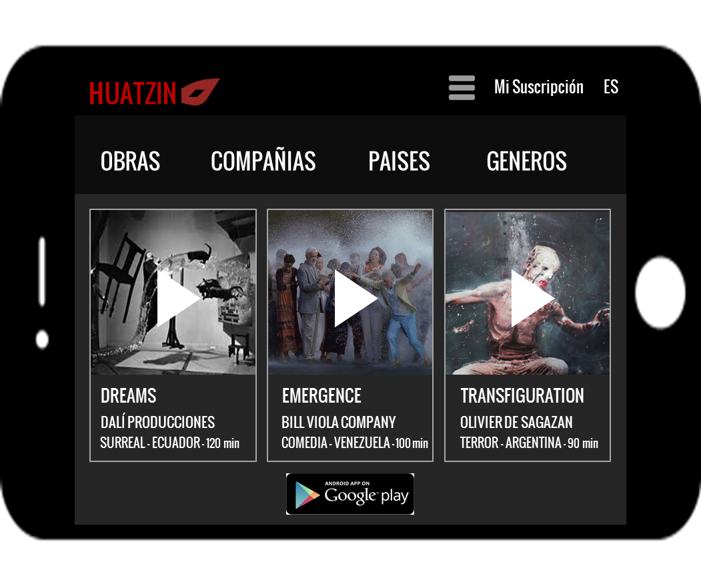

HUATZINEnjoying theater wherever you are
Proposal download (Spanish)Huatzin is an application for the presentation of theatrical works in video format. Our mission is to become the leading Internet videotheater network in the world.
VIDEOTHEATER: An alternative in global entertainment
Our vision is to position a new concept of theater capable of reaching all corners of the planet through the Internet as videotheater. With videotheater, theater companies can produce works capable of replacing daily entertainment with an alternate cultural proposal, adding value over classic stage by offering more than story narration through expression of moods, passions, dreams, concepts, feelings, and imagination resulting in new experiences for the audience.
INTERNET IS THE KEY IN A NEW SETTING FOR SCENE
Theater companies participating in Huatzin will not only be part of the project’s funding. They will also be part of an international theater revolution without precedent where they will show the entire world the quality of their creations, opening doors to a new communication and artistic challenge which in turn will form the bases for a future wherein theater becomes the first choice in daily entertainment.
A COMMITMENT OF VALUE
We hope to count on you in action against the challenges that confront us. Together we can transform mass consumption into a consumption of value born of the heart of Latin American theater. It will gather the spirit of critique and the attitude of nonconformity, innovation, and experimentation from the entire world. The theatrical revolution begins now! Find out more at huatzinapp@gmail.com.